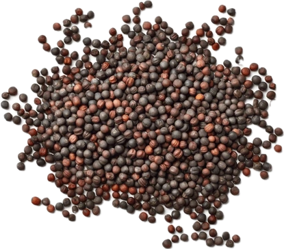

Brassica nigra
Overview
Black mustard is a plant species in the Brassicaceae family, native to regions of Europe, Asia, and North Africa. It is cultivated for its seeds, which are small, round, and dark brown to black in color. Black mustard seeds have a pungent, spicy flavor and are commonly used as a spice in various cuisines.
Cultural Overlap
Black mustard seeds are a staple ingredient in Indian, Mediterranean, and African cuisines, where they are used to add heat and flavor to curries, pickles, and marinades. They are also used in traditional medicine systems for their potential health benefits. In some cultures, black mustard seeds are believed to symbolize prosperity and good fortune.